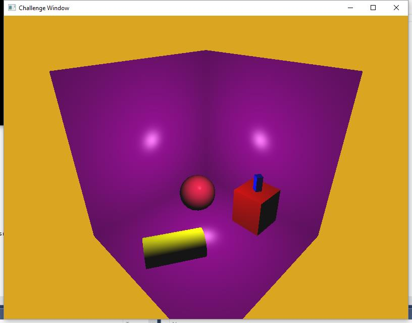
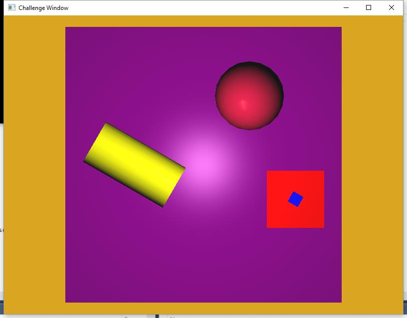

The goal of the mid semester challenge is to give you the opportunity to check your skills and to think about what you've learnt so far. The skills you require to complete this challenge are also very similar to the skills that will be required for your ACW.
For your own records you should try to commit your work to SVN whenever a new piece of functionality is completed, with an appropriate message. To help you maintain focus you might want to write an ordered list of the necessary tasks you will need to complete. As you complete each task you should commit your work with a description of the task you have just completed.
You challenge (should you choose to accept it) is to use OpenGL to generate the following scene.
To help you figure out what goes where here is an orthographic top-down view of the scene
Colour R:0.854902 G:0.6470588 B:0.1254902
The large cube which surrounds the other objects:Colour R:0.5019608 G:0 B:0.5019608 Dimension 24 units
All other objects should be resting on the floor of the large surrounding cube.
The big cuboid in the scene:Colour R:1 G:0 B:0 Dimension 5 units Height 6 units X 8 Z 3
The small cuboid in the scene:Colour R:0 G:0 B:1 Dimension 1 units Height 3 positioned on top of the big cube (centred alligned vertically) and rotated by 1.047198 radians
The sphere in the scene:Colour R:0.8627451 G:0.07843138 B:0.2352941 Radius 3 units X 4 Z -6
The cylinder in the scene:Colour R:1 G:1 B:0 Radius 2 length 9 is positioned with X value 6 (Z is alligned with the centre of the scene) and rotated by 1.047198 radians
Use whatever lighting you like. In the screenshot the scene is lit using a white point light at the centre of the scene, and all object have the same ambient and specular reflectivities, and the same shininess.
There are two cubes in the scene - an inside cube and an outside cube. You could change the cull face, but then you would have to deal with the normal vectors pointing in the opposite direction. Alternatively you can either generate a model for each using the (made up) sjg format.
Here is a description of the sjg format:
Be aware of the dimensions of the models so that you can scale, translate and rotate them into place. The sphere and cylinders both have a radius of 1 unit. The cylinder has a length of 2 units.
Develop your solution iteratively, and commit your work each time you get something working.
Think about how you might be able to save some time and effort using better class design. This will serve you well in preparation for your ACW. Here are some suggestions for areas of improvement.